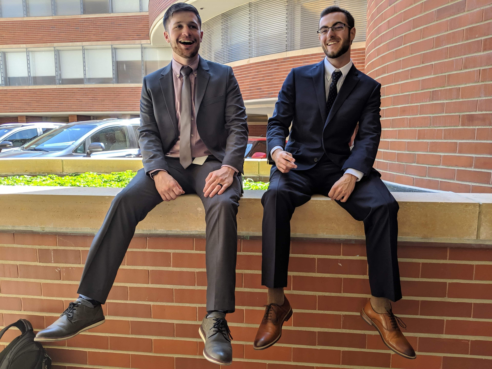

Intro

Understanding how things work on a fundamental level has been a driving obsession of mine for as long as I can remember. The moment I got access to the internet I started reading every single how-to website and watching every explainer that I could get my hands on.
When it finally came time to choose my major for college, Computer Science was the obvious choice. Four years later, after studying at University of Wisconsin-Whitewater and spending a semester in Tokyo, Japan, I earned my BS in Computer Science. During that time, I created a few things that I'd like to share with you on this website.
Work

During my time at UW-Whitewater, I had the privilage to work at both internships and student jobs, all of which were incredibly rewarding:
S. C. Johnson
- Business Process Technology Intern
- Helped implement Cisco Viptela company wide.
- Used Python to automate SAP enterprise management software
Total Administrative Services Coorporation
- Web Development Intern
-
Work with web team alongside iOS and Android teams to refine and build an HR application that digitized TASC’s product and allowed clients a one-stop-
shop for all company benefit needs.
-
Technologies/skills learned and polished include Typescript, Bootstrap, Angular 7, and unit testing with Jest.
UW-Whitewater Housing - ResNET
- Tier 2 Technical Support Analyst
-
Implement and maintain coax, ethernet, and wireless access point
infrastructure throughout University of Wisconsin-Whitewater campus.
- Troubleshoot hardware/software issues in computers, phones, and education
equipment for campus staff and residents.
- Staff campus technology help desk.
University Development Services
- University Housing Technology Web Developer.
-
Promoted from ResNET.
-
Using HTML/CSS, Bootstrap, JavaScript, Laravel and PhpMyAdmin, implement and maintain new and existing applications within the University of Wisconsin-Whitewater student and staff portals.
-
Update UW-Whitewater website based on Housing Management requirements as needed.
Skills
Throughout my undergraduate degree and various work experiences, I've developed proficiency in the following skills
- Python, Java, JavaScript/HTML/CSS, PHP
- jQuery, React, Bootstrap
- MySQL, MongoDB, NoSQL
- Data Structures, Algorithms, Agile & Scrum, Software Development Lifecycles
Contact
jedediah.pulley@gmail.com